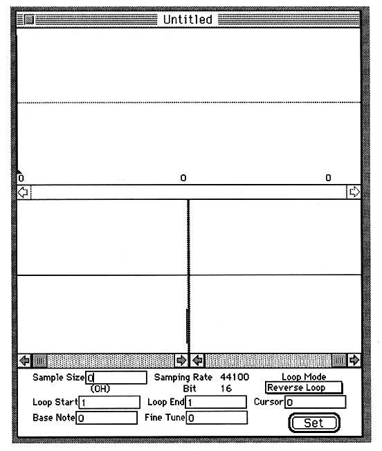

Return to previous page ｜ Return to menu ｜ Go to next page
-
6. Functional details
- This section describes the function of each item in the menu and each icon in the control window.
-
File menu
●New
- Opens an edit window that does not import waveforms when you want to import PCM data from SCSP.

To display the waveform on the screen, first select Get Sound from the SCSP menu. When Start is clicked, data is acquired from SCSP. When Stop is pressed, data acquisition is completed and the waveform is displayed on the screen.
Return to previous page ｜ Return to menu ｜ Go to next page